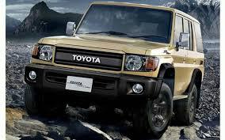
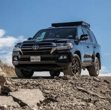

La Toyota
les vehicules Toyota equipers de moteurs V8, tels que le Toyota Land cruiser ou le Toyota Tacoma, sont
generelement appreies pour leur fiabiliter , leur robustesse et leurs perforcemences. les moteurs V8 de Toyota
sont reputes pou leur durabilite et leur capacite a fournir une puissance constante, que ce soit pour une
conduite quotidienne, des taches de remorquage.
En outre, les modeles comme toyota land cruiser sont connus pour leurs excelentes capacites tout-terrain.


prix: 84.550$
offres specials: 10%
avis des clients
- "La toyota land cruiser est une veritable bete tout-terrain. son moteur puissant et sa robustesse en font un
choix ideal pour les aventures hors route. cependant, sont cote utilitaire peut rendre la conduite en ville
moins confortable."
- "je suis impressionner par la fiablite de toyota land cruiser. cest une voiture spacieuse avec beaucoup "
- "jai posseder ma land cruiser pendant plus de cinq ans maintenant , et je n'ai jamais eu de problemme majeur
avec elle que ce soit sur autoroute ou en tout terrain, elle offre une conduite confortable et securitaire.
sa robustesse et sa fiabilite sont impressionnante, et elle a vraimment repondus a toute mes attentes. bien
que sa consomation de carburants puisse etre un peu elevee, je trouve que cela en vaut largement la peine
pour la qualite desprit que ce vehicule offre. je recommande vivement la toyota land cruiser a ceux qui
cherchent un vehicule tout-terrain fiable et polyvalent."